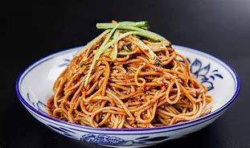
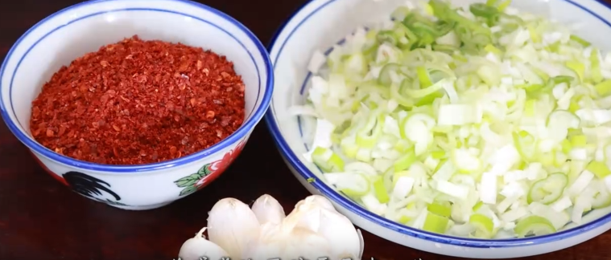
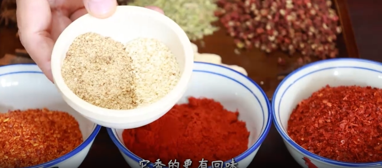
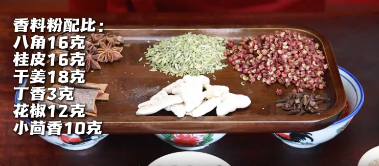
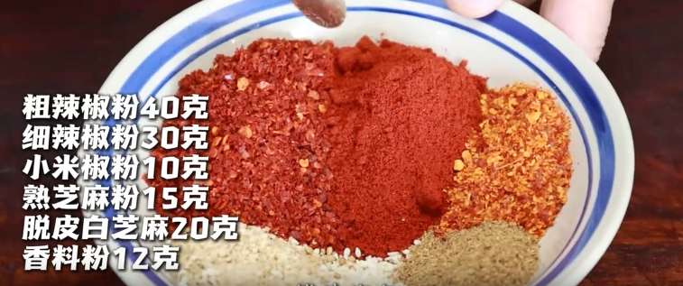
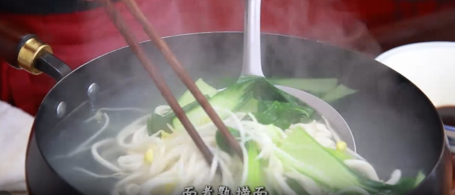
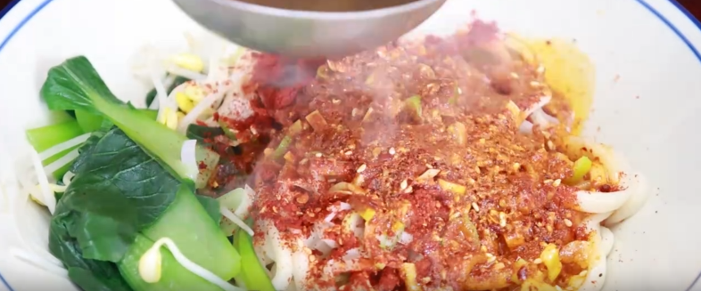
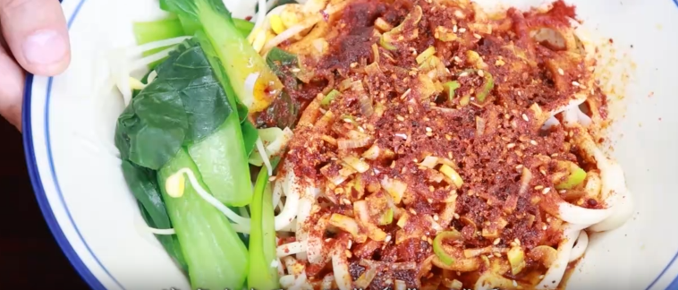
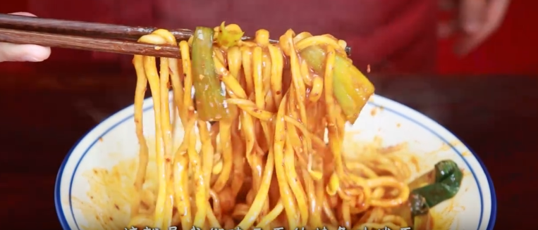

视频教程
油泼面制作过程
一、油泼面的两个核心问题

- 很多人油泼面做得不好、吃着不香，主要存在两个问题：
- 问题1：泼什么？ —— 油泼料的配方
- 问题2：怎么泼？ —— 泼油的技巧
- 💡 提示：油泼面不只是一道工序，这里面有学问。
二、泼什么？—— 油泼料的配方
2.1 基础泼料

- 辣椒：三种辣椒搭配
- 葱：提香
- 蒜：一瓣蒜
2.2 面馆的核心秘方（三种辣椒搭配）
- 粗辣椒粉：吸足椒香
- 细辣椒粉：提高红润度
- 小米椒：增够香辣
- 💡 提示：三者搭配，红润度、椒香、辣香都有了！
2.3 增香配料

- 熟芝麻粉：增香，更有回味
- 脱皮白芝麻：增香，更有回味
2.4 核心香料（油泼料的灵魂）


- 这盘香料除了小茴香之外，所有的香料香味都很霸道
- 每一碗用量只有一点点，瞬间一泼就要激发出香料的串香
- 如果料太浓了，那这一泼就很平淡
- 💡 提示：搅拌均匀，才能泼出香的层次，有回味，不突兀。
✅ 这就是油泼面的第一个问题：泼什么？
三、怎么泼？—— 泼油的技巧
3.1 下面与煮面

- 把两头整起来捏死
- 两手托住往外延展，中间缀一下
- 先挂小拇指，提起来甩一甩
- 再挂无名指，再摔一摔
- 揪头，下锅
- 面煮熟，捞面、拌面汁、打好碗底
- 煮熟的拉条子装碗
3.2 泼油的关键要点

- 撒料要开：油泼料一定要撒开，不要堆在一起，摊开了才容易泼透出香
- 油温要稳：油温高了会泼糊，急了激发不出香
- 恒温烧油：面馆用恒温烧油器，确保油温始终如一
3.3 泼油手法（分3次泼）
- 第1次：少量泼，利用高油温
- 第2次：少量泼，刚好能把撒料泼透
- 第3次：少量泼，足足激发出各种撒料的香
- 💡 提示：循序渐进的泼3次，每次不要多，刚好能把撒料泼透。
四、成品标准


- 视觉：红润透亮
- 嗅觉：香气四溢
- 口感：面条劲道，香料有层次
- 💡 提示：上筷子搅一搅，每个面条上都挂着油泼料的红润——这就是我们陕西面的特色油泼面！
五、吃法
- 拌蒜：别忘了这碗面要就拌蒜
- 油泼面：来一口，香得发抖！
六、制作要点总结
- 1. 泼什么：三种辣椒 + 芝麻粉 + 核心香料
- 2. 香料用量：一点点就够了，太多会平淡
- 3. 撒料方式：一定要撒开，不要堆在一起
- 4. 油温：要稳定，不能过高或过低
- 5. 泼油手法：分3次泼，每次少量，循序渐近
- ✅ 掌握这五点：泼出一碗香气四溢的陕西油泼面！